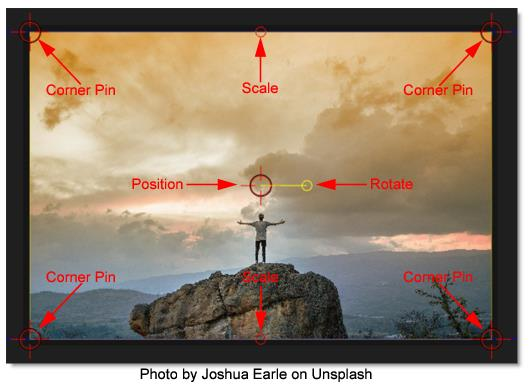
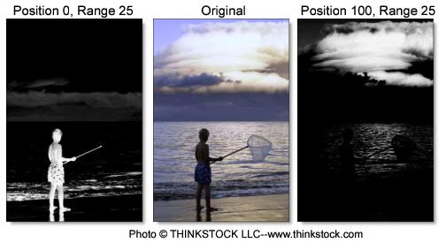
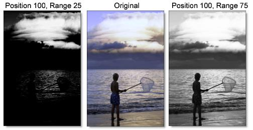

Common Filter Controls
There are a number of common filter controls that appear in Optics. For simplicity they are listed here.
Blur
Horizontal
The image is blurred by a quality blur along the X-axis.
Vertical
The image is blurred by a quality blur along the Y-axis.
Gang
The horizontal and vertical slider values can be ganged together. When ganged, moving the slider affects both values.
Black and White
Selects the type of black and white filter to be applied to your color image.
Normal
Converts the color image to a monochrome image.
Red
Simulates a red filter in black and white photography.
Green
Simulates a green filter in black and white photography.
Blue
Simulates a blue filter in black and white photography.
Yellow
Simulates a yellow filter in black and white photography.
Orange
Simulates an orange filter in black and white photography.
Grad
Grad is the gradient transition area between the filtered image and the original. Its direction, corners, size and angle can be adjusted.
On-Screen Controls
Corner Pin
There are four points around the corners of the image. By clicking and dragging any of the four points, the perspective of the gradient is adjusted.
Upper-Left
Controls the X and Y position of the Upper Left Point.
Upper-Right
Controls the X and Y position of the Upper Right Point.
Lower-Right
Controls the X and Y position of the Lower Right Point.
Lower-Left
Controls the X and Y position of the Lower Left Point.
Position
Drag the center point.
Scale
Drag the top/bottom mid-points.
Rotate
Drag the right center circle.
Controls
Enable
Turns the gradient on and off.
ND Brightness
Darkens the colored portion of the gradient.
Type
Controls the direction of the gradient.
Top-to-bottom
The direction of the gradient is from top to bottom.
Bottom-to-top
The direction of the gradient is from bottom to top.
Left-to-right
The direction of the gradient is from left to right.
Right-to-left
The direction of the gradient is from right to left.
Horizontal Strip
Horizontal strip gradient.
Vertical Strip
Vertical strip gradient.
Gradient Size
The size of the gradient.
Gradient Angle
The angle of the gradient.
Matte
In some of the filters, a matte is generated to create the desired effect. The Matte controls consist of Position, Range and Blur parameters, and they work the same in all of the filters. The white areas of the matte are the areas that will be affected by the filter, while the black areas remain unaffected. The matte is extracted based on luminance, in most cases, and is created using the Position and Range parameters.
Position
Selects the values to be included in the matte. A higher Position value shows more white values from the original image as white values in the matte. A lower Position value shows more black values from the original image as white values in the matte.
Range
Controls the range of values to be used for the matte. Once you’ve selected the “Position”, you can then add or subtract the “Range” of values to be included in the matte. A higher Range value includes more white values in the matte while a lower Range value includes less values in the matte.
Blur
The matte is blurred by a quality blur.
Spot
A spot in the form of a radial gradient is used to limit the effect of the filter.
Controls
Position
The position of the spot.
Aspect
The aspect ratio of the spot.
Radius
The un-blurred radius of the spot.
Falloff Radius
The blurred edge radius.
Falloff
Moves the falloff towards the spot center point.
Invert
Inverts the spot.
Temperature
Color
Sets the color through the use of a standard color picker.
Opacity
Sets the opacity of the warming or cooling.
Preserve Highlights
Preserves the white areas of the image.
Exposure Compensation
Exposure Compensation adds back the brightness loss as a result of the warming or cooling.
Transform
Transform your image using Position, Scale, Rotation, Corner-Pin, Shear and Crop controls.
Controls
Crop
Top
Crops the image from the top down.
Bottom
Crops the image from the bottom up.
Left
Crops the image from left to right.
Right
Crops the image from right to left.
Corner Pin
The Corner Pin controls change perspective.
Upper-Left
Controls the X and Y position of the Upper Left Point.
Upper-Right
Controls the X and Y position of the Upper Right Point.
Lower-Right
Controls the X and Y position of the Lower Right Point.
Lower-Left
Controls the X and Y position of the Lower Left Point.
Position
Position X
The horizontal position.
Position Y
The vertical position.
Scale
Scale X
The horizontal scale.
Scale Y
The vertical scale.
Gang Scale
The Scale X and Scale Y values can be ganged together.
Rotate
In addition to the standard position and scale controls, you can rotate. Positive values rotate clockwise and negative values rotate counter-clockwise.
Shear
Shear X
Skews left and right.
Shear Y
Skews up and down.
Anchor
Anchor X
Defines the point on the X axis around which position, rotation, scaling or shearing takes place.
Anchor Y
Defines the point on the Y axis around which position, rotation, scaling or shearing takes place.
Filter
Chooses the filtering method when transforming the image. Mitchell is the default.
Triangle
The Triangle filter is not the highest quality, but fine for scaled images.
Quadratic
Quadratic is like triangle, but more blur with fewer artifacts. It offers a good compromise between speed and quality.
Cubic
Cubic is the default filter in Photoshop. It produces better results with continuous tone images, but is slower than Quadratic. If the image contains fine details, the result may be blurrier than desired.
Catmull-Rom
This produces good results with continuous tone images which are scaled down, producing sharp results with fine detailed images.
Gaussian
Gaussian lacks in sharpness, but is good with ringing and aliasing.
Mitchell
A good balance between sharpness and ringing, Mitchell is a good choice when scaling up.
Sinc
Keeps small details when scaling down with good aliasing.
View
Chooses what to view. The choices in this menu will change depending on the filter.